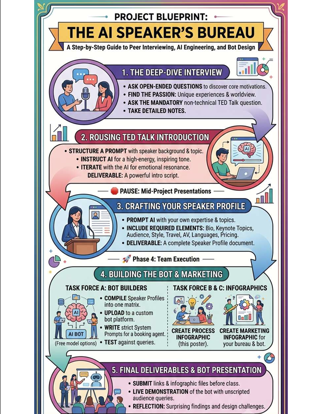
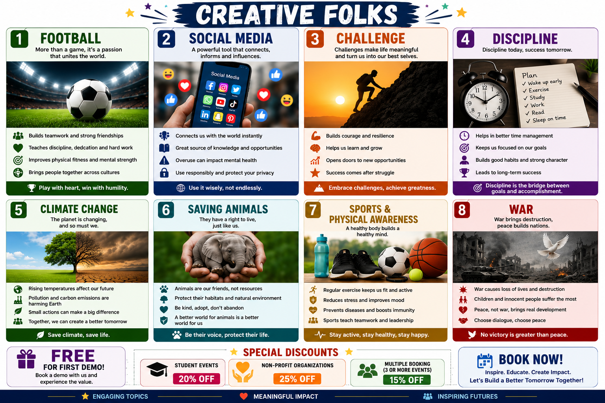
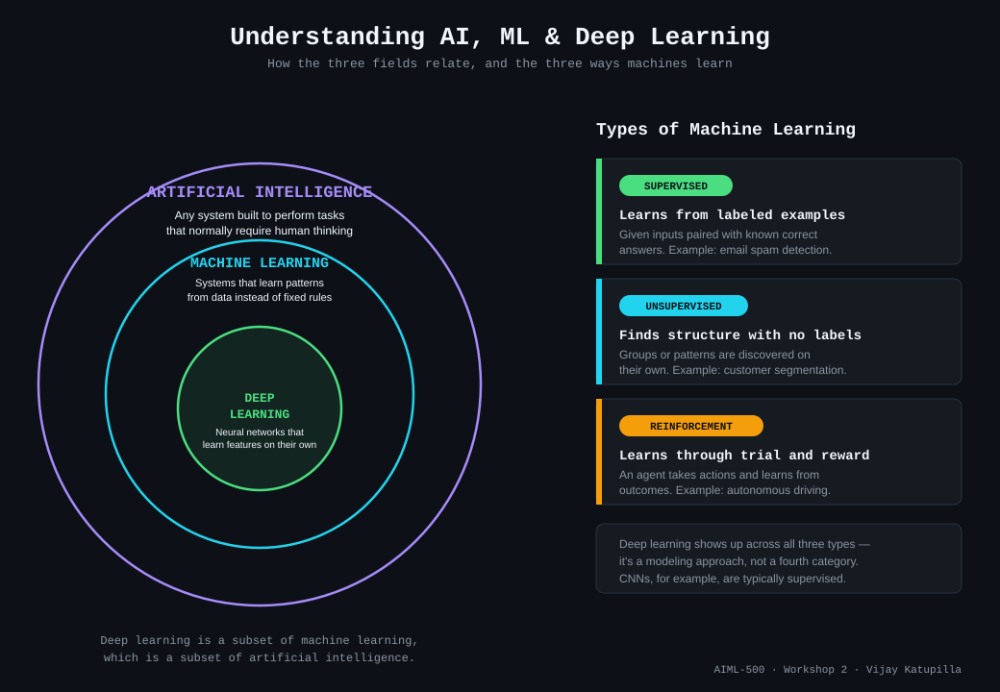
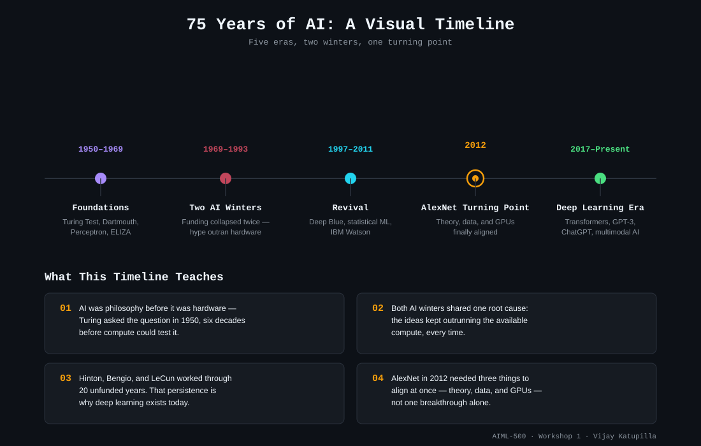

Software engineer with six years building cloud-native, enterprise-scale systems — now completing a second Master's focused on applied AI: LLMs, LangChain, and GenAI engineering. This portfolio is a record of that shift, told through four artifacts from this coursework.
I combine a full-stack and cloud engineering background — containerized microservices, workflow automation, distributed systems — with a growing focus on applied AI: prompt engineering, retrieval-augmented systems, and multi-agent tools. The artifacts below trace that shift directly: a researched history of how AI got here, a hands-on AI Lab project where I engineered prompts and a constrained booking bot from scratch, and an honest self-assessment of where my leadership skills need to grow to manage AI transitions, not just build them.
Outside of engineering, I'm a competitive athlete and a youth-sports advocate — I grew up playing competitively in India and have spent the last few years encouraging kids here to see sports as more than a career path: a way to build confidence, discipline, and leadership.
My approach to AI/ML is the same one I bring to any engineering problem: build the smallest working version first, then find out what's actually broken by testing it against real use — not by assuming the plan is right. I'd rather ship something imperfect and fix it against real feedback than polish a plan that's never been tested.
Four artifacts from AIML-500. Pick one to see the full breakdown — objective, process, and what it's meant to prove to whoever's reading it.
Developed to practice deep interviewing, structured AI prompt engineering, and AI system design by building a functional booking bot — moving from a human conversation to a constrained, queryable AI product.
Interviewed a teammate, drafted structured AI prompts for a TED-style introduction, built my own Speaker Profile, and — as part of the Bot Builders task force — compiled the team's profiles into a knowledge base with a system prompt constraining the bot to act only as a booking agent. Tested live against unscripted audience queries.
Google AI Studio (bot platform), an AI assistant for prompt drafting and iteration, AI design tools (Chat GPT) for infographic creation, Python/image editing — used to remove corrupted AI-generated text from the process infographic before publishing, structured peer-interview methodology.


Software developer, competitive athlete, and youth-sports advocate. Focused on encouraging young people to see sports as a tool for confidence, discipline, leadership, and resilience.
Demonstrates the difference between casually prompting an AI and engineering a constrained AI system end-to-end, from a raw interview to a working, testable product.
My instructor evaluating applied AI/ML system-building skill; classmates interested in prompt engineering and AI product design.
Built to clarify how artificial intelligence, machine learning, and deep learning relate to one another, and to break down the three core types of machine learning before applying these concepts in later coursework.
Researched the nested relationship between AI, ML, and deep learning, then designed an infographic showing that relationship alongside the three primary learning paradigms — supervised, unsupervised, and reinforcement learning — each grounded in a concrete, real-world example rather than an abstract definition.
Online technical articels which are helped to match real-world examples, Claude (Anthropic) was used to generate the SVG graphic itself, based on my research and specific content direction. Concept, structure, and examples are mine; Claude executed the visual design.

Demonstrates the ability to translate technical AI/ML concepts into something a non-technical audience can grasp quickly — the same skill required when explaining AI systems to stakeholders outside engineering.
My instructor evaluating conceptual understanding; secondarily, classmates or newcomers wanting a fast visual orientation to the field.
A researched exploration of AI's 75-year evolution — from Turing's founding question to the modern generative AI era — identifying the pattern behind AI's cycles of hype, collapse, and breakthrough.
Researched five major AI eras, identified the cause and effect behind two AI winters, and synthesized four original observations connecting theory, funding, and hardware across the full timeline.
PowerPoint, Google Scholar and academic/industry sources (IEEE Computer Society, Our World in Data), Educational platforms and tutorials to better understand practical implementations, video research.

Demonstrates the ability to synthesize a broad, unstructured body of research into an original, defensible argument rather than a simple timeline of facts.
My instructor and classmates assessing research and synthesis skill; secondarily, anyone wanting a fast, opinionated history of AI.
An honest evaluation of my strengths and gaps across an AI/ML competency assessment and a change-management assessment, connected to a real leadership challenge from the CCL change-leadership framework.
Cross-referenced assessment results against real project history rather than accepting scores at face value. Identified technical understanding, stakeholder communication, and ethical awareness as strengths — and named budget ownership, building training programs, and closing the feedback loop as genuine gaps. On change management, traced planning and communication strengths back to a software background, and identified sitting with ambiguity as the sharpest area to grow.
AI/ML self-assessment instrument, change-management assessment instrument, CCL (Center for Creative Leadership) article on change leadership, changestrategists.com framework on skill clustering, Grammarly — used to proofread the written reflection.
Demonstrates a willingness to name real leadership and technical gaps precisely, and to critique the evaluation tools themselves rather than accept their output uncritically.
My instructor evaluating critical reflection and self-awareness; secondarily, a personal record for me to revisit later in the program.
In performance conversations, my engineering manager has described my work on our team's cloud migration and automation projects as dependable and clearly communicated, and has noted that I'm someone the team can rely on to work through ambiguous problems without losing momentum.
A teammate from the AI Lab group project mentioned that the system prompt I wrote for our booking bot was the piece that made the live demo actually hold up under unscripted questions, and that I was easy to hand ambiguous, half-defined tasks to during crunch.
Open to conversations about applied AI, cloud engineering, or the intersection of the two — reach out through any of these.